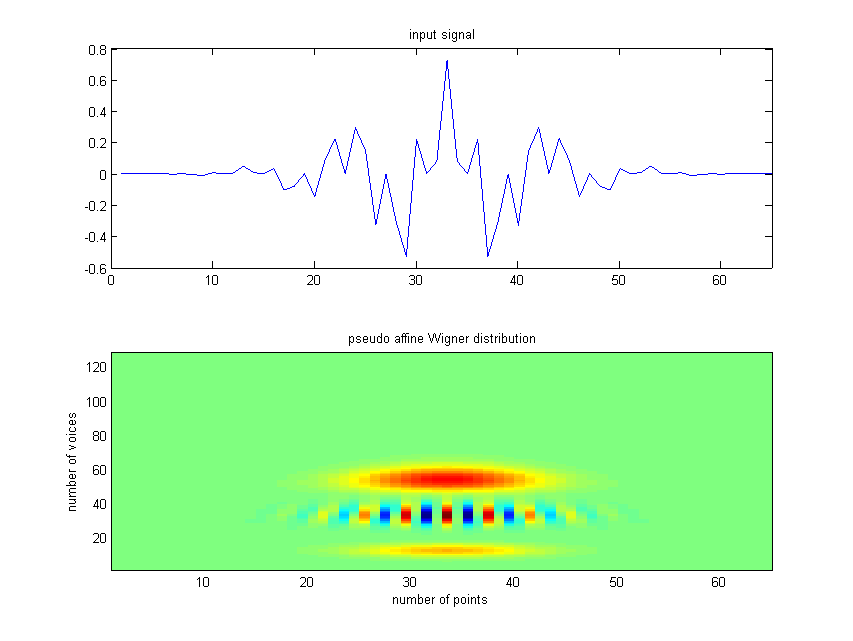

| FRACLAB Functions |
|
Computes the Pseudo Affine Wigner distribution of a 1D signal
WIG = pseudoaw(x,bounds,voices)
WIG = pseudoaw(...,'Wavelet type') or pseudoaw(...,'Wavelet type',wave)
WIG = pseudoaw(...,'Propertyname',Propertyvalue)
WIG = pseudoaw(x,bounds,voices) Computes the pseudo affine Wigner distribution WIG of the input signal x, using the Mexican Hat wavelet and the pseudo Bertrand distribution. The parameter bounds is a 2 elements vector, [fmin,fmax], fmin and fmax are real values in (0:0.5) which represent the lower and upper bound frequencies where the analyzis is performed. The parameter voices is a positive integer which represents the number of scales computed between fmin and fmax frequencies.
|
The output structure |
WIG = pseudoaw(...,'Wavelet type') or WIG = pseudoaw(...,'Wavelet type',wave) Computes the pseudo affine Wigner distribution WIG using a specific type of wavelet. The Wavelet Type can be choosen from the list below :
| Specifier | Wavelet Type |
|---|---|
| 'mexican' | Mexican Hat (default) |
| 'morletr' | Real Morlet |
| 'morleta' | Analytic Morlet |
WIG = pseudoaw(...,'Propertyname',Propertyvalue) Computes the pseudo affine Wigner distribution WIG applying the specified property settings. The property setting can be choosen from the list below :
| Property | Purpose |
|---|---|
| 'pseudo' |
The pseudo affine Wigner distribution is computed using a specific distribution parameter, K. The most common values for K are:
K = 0 : pseudo Bertrand K = 0.5 : pseudo D-Flandrin K = 2 : pseudo Wigner-Ville If 'pseudo' is not specified, the default value is K = 0. |
| 'smooth' |
The pseudo affine Wigner distribution is computed using a specific time-smoothing parameter, SM. The parameter SM is a positive integer that represents the half length of the time smoothing window. If 'smooth' is not specified, the default value is SM = 0. |
x = Frac_morlet(0.35,32) + Frac_morlet(0.1,32);
pawx = pseudoaw(x,[0.01,0.5],128,'morleta',12,'pseudo',-1);
figure; subplot(2,1,1);
plot(x); xlim([0 length(x)]); title('input signal');
subplot(2,1,2);
pcolor(pawx.coeff); shading 'flat';
title('pseudo affine Wigner distribution');

x = fbmwoodchan(1024,0.5);
pawx = pseudoaw(x,[0.015625,0.5],128,'morleta',8);
figure; subplot(2,1,1);
plot(x); xlim([0 length(x)]); title('input signal');
subplot(2,1,2);
pcolor(pawx.coeff); shading 'flat';
title('pseudo affine Wigner distribution');
| |
percolation | regdim1d | |